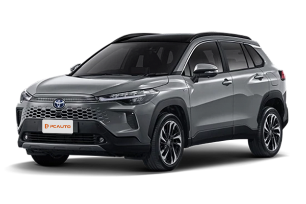
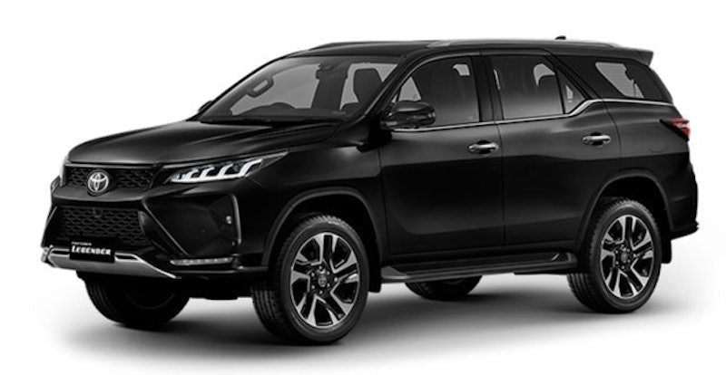
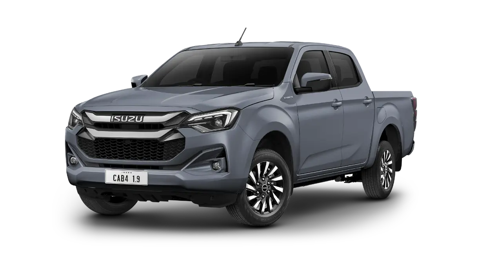
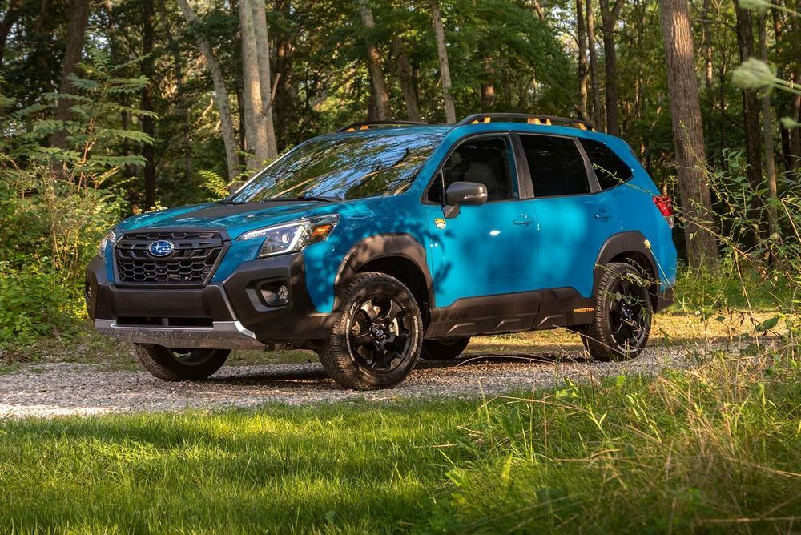
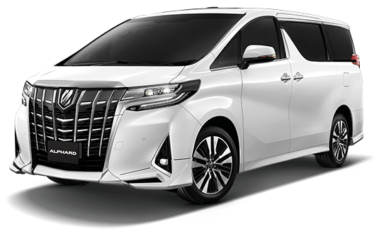

Sedan
รถเก๋ง / รถซีดาน
รถเก๋งหรือรถซีดานเป็นประเภทรถยนต์ที่พบได้บ่อยที่สุดบนท้องถนน และเป็นรถเก๋ง 4 ประตูที่มีพื้นที่เก็บสัมภาระแยกต่างหาก
ได้รับความนิยมสูงเพราะมีความเป็นส่วนตัว นั่งสบาย พื้นที่วางขากว้างขวาง และใช้งานได้จริง
รวมถึงขับขี่ในเมืองและนอกเมืองได้คล่องตัว เหมาะกับคนใช้รถคนเดียว คนมีคู่ หรือครอบครัวเล็ก ๆ ที่สำคัญ คือ
มีให้เลือกหลายขนาดตั้งแต่ขนาดเล็กไปจนถึงขนาดใหญ่
ตัวอย่างรถเก๋งยอดนิยม ได้แก่ Toyota Camry, Honda Accord

SUV
SUV (Sport Utility Vehicles) คือ รถอเนกประสงค์ ส่วนใหญ่มี 5 ที่นั่ง และมักเป็นประเภทรถยนต์ที่ออกแบบมาเพื่อการใช้งานแบบออฟโรด
บางคันติดตั้งระบบขับเคลื่อนสี่ล้อด้วย ซึ่งตอบโจทย์ผู้ที่ต้องการยานพาหนะที่สามารถรับมือกับภูมิประเทศที่ขรุขระและสภาพที่ท้าทายได้
รถ SUV มีให้เลือกหลายขนาดตั้งแต่ SUV ขนาดเล็กไปจนถึงขนาดใหญ่ มีพื้นที่เก็บสัมภาระกว้างขวาง มีตำแหน่งการขับขี่ที่สูง และการขับขี่ที่สนุก
ตัวอย่างของรถ SUV ยอดนิยม ได้แก่ Honda CR-V

PPV
PPV (Passenger Pickup Vehicles) คือ รถที่มีพื้นฐานมาจากรถกระบะ มีการเปลี่ยนช่วงล่างและตัวถังใหม่เพื่อให้ลุยได้ทุกสภาพถนน
จุดสังเกต คือ รถ PPV จะเป็นรถ 7 ที่นั่ง มีความอเนกประสงค์มากกว่ารถ SUV ทั่วไป ถ้าเป็น Ford Everest จะมีพื้นฐานมาจากรถกระบะ
Ford Ranger ถ้าเป็น ISUZU MU-X จะมีพื้นฐานมาจากกระบะ ISUZU D-Max นั่นเองตัวอย่างรถ PPV ที่ได้รับความนิยม ได้แก่ Toyota Fortuner, Mitsubishi Pajero

Pickup
รถกระบะ หรือ รถปิคอัพ คือประเภทรถยนต์ที่ออกแบบมาเพื่อบรรทุกของหรือสินค้า มักใช้ในเชิงพาณิชย์
และยังมีให้เลือกหลายแบบ ตั้งแต่รถกระบะตอนเดียว, กระบะแคป, กระบะ 4 ประตู และกระบะ 4WD
ส่วนใหญ่จะมาพร้อมการติดตั้งเครื่องยนต์ทรงพลังที่ช่วยให้ลากจูงของหนักได้
ตัวอย่างของรถกระบะยอดนิยม ได้แก่ Isuzu D-Max และ Toyota Hilux Revo

Hatchback
รถแฮตช์แบ็ก หรือบางคนเรียกว่ารถเก๋ง 5 ประตู คือ ประเภทรถยนต์ที่มีขนาดเล็กกะทัดรัด มีพื้นฐานมาจากรถเก๋ง
แต่เน้นประโยชน์ใช้สอยมากกว่า เบาะหลังพับได้ ประตูท้ายรถจะสามารถเปิดขึ้นได้ทั้งบาน มักเป็นที่นิยมสำหรับการนำมาใช้เป็นรถส่วนตัว
หรือรถครอบครัวเล็ก ๆ ที่ชอบความสปอร์ต และยังเหมาะสำหรับผู้ที่ต้องการรถใช้งานในชีวิตประจำวัน หรือผู้ที่ชอบขนของ
ตัวอย่างของรถแฮตช์แบ็กยอดนิยม ได้แก่ Toyota Yaris, Suzuki Swift, Mazda2 Hatchback และ Honda City Hatchback

Crossover
รถครอสโอเวอร์ หรือรถ CUV (Crossover Utility Vehicle) คือ รถซีดานที่ถูกขยายและยกสูงขึ้น โดยจัดเป็นประเภทรถยนต์ที่มีการผสมผสานระหว่างรถเก๋งและ
SUV เริ่มจากการนำเสนอการใช้งานของ SUV พร้อมความสามารถในการขับขี่ของรถเก๋ง รถครอสโอเวอร์ได้รับการออกแบบมาให้ประหยัดน้ำมันมากกว่ารถ
SUV ขณะเดียวกันยังคงให้พื้นที่บรรทุกสัมภาระที่กว้างขวางและตำแหน่งการขับขี่ที่สูง มักจะติดตั้งระบบขับเคลื่อนสี่ล้อทำให้เหมาะสำหรับทุกสภาพอากาศ
ตัวอย่างของรถครอสโอเวอร์ยอดนิยม เช่น Honda HR-V, Toyota Corolla Cross, Mazda CX-3 และ Subaru Forester

MPV
รถ MPV (Multi-Purpose Vehicle) คือ รถยนต์ที่มีลักษณะคล้ายรถตู้ บ้างเรียกว่ารถอเนกประสงค์หรือรถครอบครัว
เพราะมีสิ่งอำนวยความสะดวกที่ครบครัน อีกทั้งยังเป็นประเภทรถยนต์ที่มีจำนวนที่นั่งที่หลากหลาย ตั้งแต่ 6-11 ที่นั่งเลยทีเดียว
แถมบางรุ่นยังจัดเป็นรถตู้หรู VIP ที่ผู้บริหารชอบนั่ง ดาราชอบใช้อีกด้วยตัวอย่างรถ MPV 7 ที่นั่ง ราคาไม่ถึงล้าน เช่น Mitsubishi Xpander, Toyota Veloz และ Honda BR-V